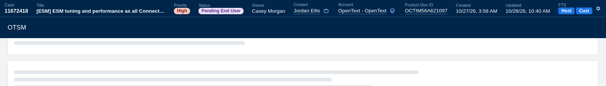
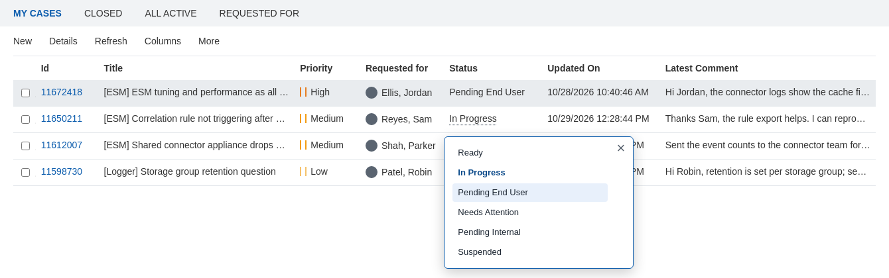
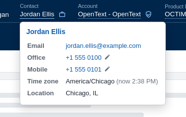
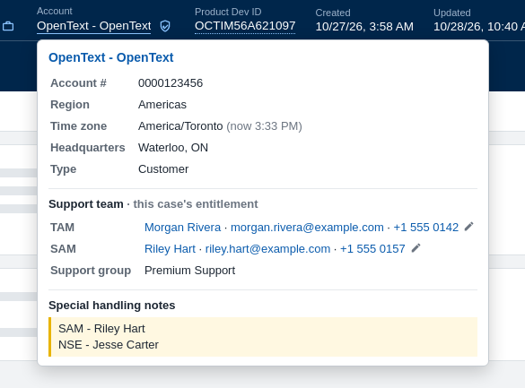
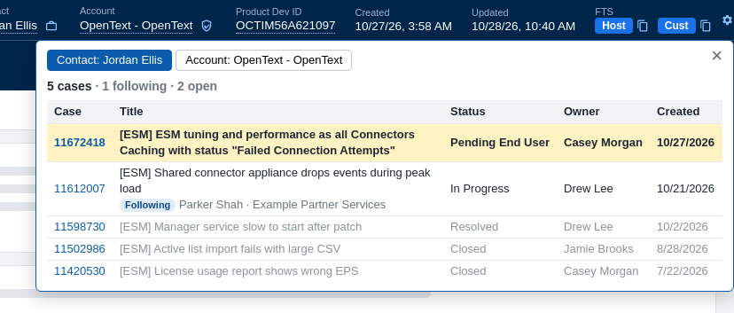
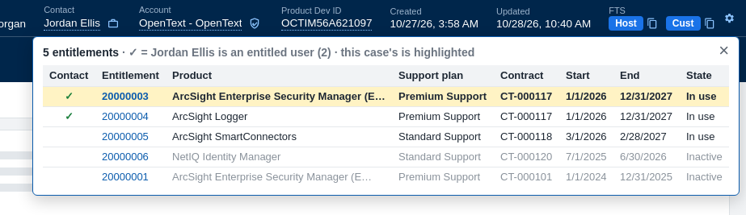
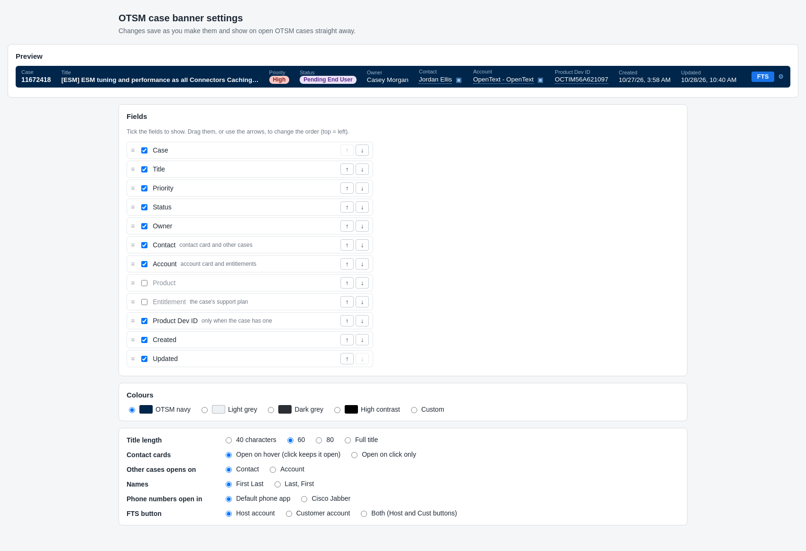

What it shows
- Change a case's status straight from your OTSM case lists, without opening the case.
- Case number (click to copy), Title (shortened; hover for all of it; click to copy the number and title, like
11672418 - [ESM] ESM tuning…), Priority and Status badges, Owner, Contact, Account, Created and Updated. - Product Dev ID when the case has one, linked to its Quixy page. Product and Entitlement can be turned on in the settings.
- FTS opens the case's FTS account in WinSCP (or your default FTP app), logged in with the case's credentials. Right-click it to copy the FTP address with the login, to paste into FileZilla or any other FTP program.
- Contact and account cards with phone numbers, the account's support team and special handling notes.
- It stays on screen as you scroll, and reloads when you press OTSM's Refresh button on the case.
Change a status from your case lists
In OTSM's own case lists (My Cases and the others), click a case's status and pick a new one: Ready, In Progress, Pending End User, Needs Attention, Pending Internal or Suspended. It saves straight away, the same way OTSM's Save does, without opening the case. If the case was changed by someone else in the meantime, OTSM's message says so and nothing is changed. Resolved and Closed aren't offered, because they need a solution and completion code. This can be turned off in the settings.
If you don't use the case preview on the right of OTSM's case lists, set Case preview to Collapsed in the settings: it's then closed each time you open a list.

Contact and account cards
Hover over the contact or account name for their details: email and phone numbers, time zone with the local time there, location, account number and region. Click to keep the card open. The name at the top of a card opens the contact's or account's page in OTSM. Click a phone number to call it with Cisco Jabber, or the pencil next to it to edit the number in Jabber first.

The account card also shows the support team: the TAM, SAM, premium manager and support group from the case's entitlement (or the account's other entitlements), and the account's special handling notes.

Other cases
The case icon next to the contact lists the contact's other cases, or the whole account's, newest first, with links. Cases the contact follows are included and marked, as they are in the contact's own portal. This case is highlighted and closed cases are greyed.

Entitlements
The shield icon next to the account lists its entitlements: product, support plan, contract, dates and state, in-use ones first. A ✓ marks the ones the case's contact is an entitled user on, and the case's own entitlement is highlighted.

Settings
Click ⚙ on the banner (or right-click the extension's icon and choose Options) to pick which fields show and in what order, the colours, the title length, how names are shown (First Last or Last, First), which FTS account the button uses, and whether it opens WinSCP or your default FTP app. Changes show on open cases straight away.

Privacy
The extension only runs on OTSM case pages. It reads the case, contact, account, entitlement and special handling note details from OTSM with your own login, the same way the OTSM page does, and doesn't send anything anywhere else. Your settings are kept in your browser profile.
Download & install
Firefox
- Click Firefox: add above, then Continue to Installation and Add.
- Open or refresh an OTSM case. The banner appears at the top.
Firefox installs new versions by itself (it checks about once a day). To check now: about:addons, the gear
icon, Check for Updates.
Chrome or Edge
The extension isn't in the Chrome or Edge store, so you load it from a folder. It takes a minute:
- Click Chrome or Edge: download above and extract the zip somewhere you'll keep it, such as
Documents\otsm-banner. The browser runs the extension from that folder, so don't delete it. - Open
chrome://extensionsin Chrome, oredge://extensionsin Edge. - Turn on Developer mode (top right in Chrome, on the left in Edge).
- Click Load unpacked and pick the
otsm-bannerfolder (the one withmanifest.jsonin it). - Open or refresh an OTSM case. The banner appears at the top.
To update: download the new zip and extract it over the old folder, replacing the files. Then click the reload arrow on the OTSM case banner card on the extensions page, and refresh your OTSM tabs.
FTS
The FTS button needs WinSCP installed. The first time, the browser asks whether to open WinSCP; tick the box to always allow it, so it doesn't ask again.
To use another FTP program, set FTS opens in to Default FTP app: the button then opens whatever Windows has set for FTP links. Or right-click the FTS button to copy the address and paste it into your FTP program (in FileZilla, into the Quickconnect Host box).
Changelog
- 1.7.6 October 30, 2026
- Click the title to copy the case number and title, like
11672418 - [ESM] ESM tuning…. - The extension has an icon.
- Click the title to copy the case number and title, like
- 1.7.4 October 29, 2026
- Fixed: the banner sometimes didn't show after moving to a case from another part of OTSM until the page was refreshed (F5).
- Fixed: Chrome and Edge no longer ask to "Access other devices on your local network". Product Dev ID links now open Quixy in a new tab from the extension.
- 1.7.3 October 29, 2026
- Setting: start case lists with OTSM's case preview pane collapsed (Settings, Case lists, Case preview).
- 1.7.2 October 29, 2026
- Firefox: install with one click from this page; Firefox installs new versions by itself.
- Right-click the FTS button to copy the FTP address (replaces the copy icon).
- 1.7.1 October 29, 2026
- Change a case's status from OTSM's own case lists: click the status and pick a new one (on by default; can be turned off in the settings).
- In a narrow window the title shrinks first, then the title and account together, then a long contact name.
- The settings page shows the version.
- 1.6.0 October 29, 2026
- Phone numbers call with Cisco Jabber; the pencil next to a number opens it in Jabber to edit before calling.
- 1.5.1 October 29, 2026
- Setting: FTS opens in WinSCP or your default FTP app.
- Copy the FTS address for FileZilla or other FTP programs.
- 1.3.1 October 29, 2026
- The account card shows the support team (TAM, SAM, premium manager, support group) and special handling notes.
- The names at the top of the contact and account cards open their OTSM pages.
- The contact's other cases include cases they follow, as their portal shows them.
- 1.2.6 October 29, 2026
- First version on this page: the one-line banner, contact and account cards, the contact's and account's other cases, the account's entitlements, FTS in WinSCP, Product Dev ID linked to Quixy, and settings for fields, order, colours, title length, names and FTS.